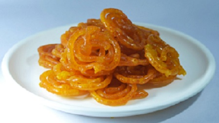

Afghan Jelabi

This Afghan Jelabi is one of the most famous Afghan sweets which is made of dough, boiled in oil and then poured into sweet syrup and then dried. Usually when people are engaged or married they try to take it to thier father in-laws during Eid or New year celebrations.